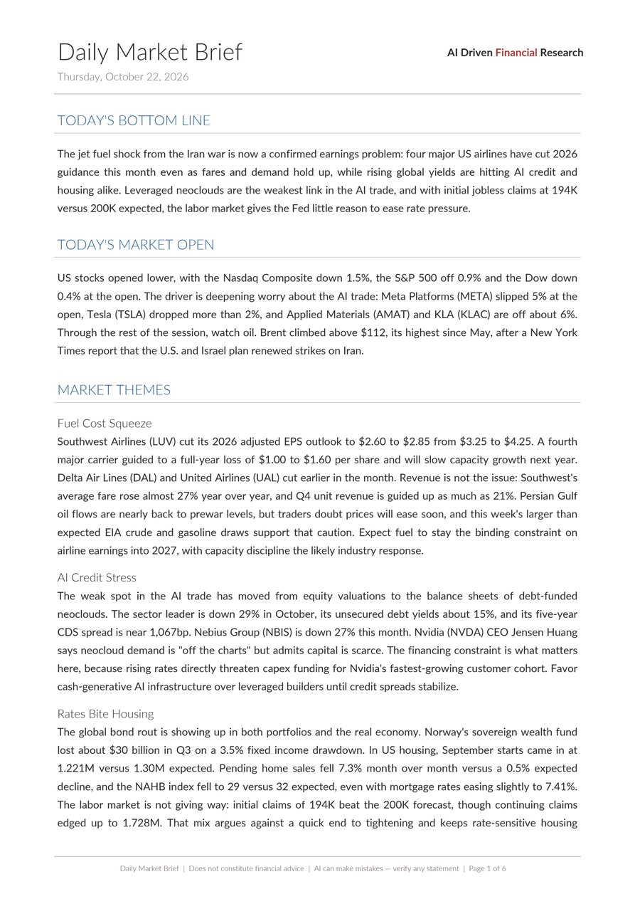
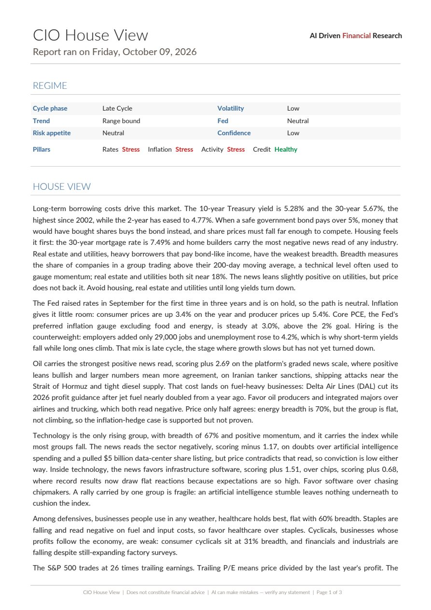
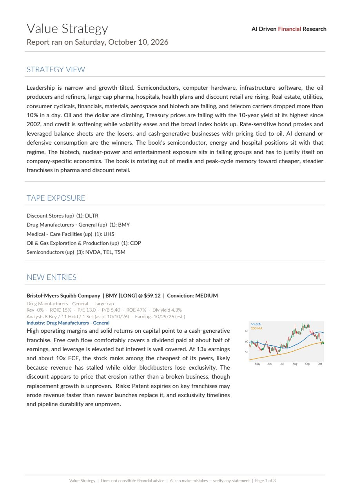

Multi-agent market research platform
AI Driven Financial Research
Specialist AI analysts monitor US markets every trading day and publish institutional-format research: a daily market brief, a weekly CIO house view, a tactical investment note and six strategy books. Built with Claude.



What it does
One research desk, staffed by AI agents, each with a defined mandate.
Every agent reads the same market record and applies its own discipline. Six strategies run paper portfolios with entries, exits and holdings. A chief investment officer layer sets the market regime above them. A tactical note reconciles the strategies into one book. Every position is tracked from entry to exit.
- Monitor
News, prices, fundamentals, SEC insider filings, congressional trades, macro series and analyst commentary, ingested on schedule.
- Assess
A weekly regime call across rates, inflation, activity and credit, with industry breadth and momentum from the price tape.
- Select
Growth, Value, Macro Rotation, Congress, Smart Money and Street View, each screening the Russell 1000 or a 23-ETF macro menu.
- Publish
Formatted PDF reports delivered to dedicated channels, from the daily market brief to the weekly strategy books.
How it works
Platform architecture- SourcesNews feeds · Market data and fundamentals · SEC EDGAR Form 4 · Congressional trades · FRED macro series · Analyst video transcripts
- IngestionScheduled jobs on GitHub Actions normalize tickers, tag and rank articles, remove duplicates and validate.
- PostgreSQL · 42 tablesShared by all agents
- AgentsCIO layer House View · Tactical Investment NoteStrategy layer Growth · Value · Macro Rotation · Congress · Smart Money · Street ViewDaily desk Market Brief · Options · Swing
- DeliveryPDF reports to Discord
Agents work independently
Each agent reads from the shared database, saves its results and stops. The CIO reads what the strategies saved earlier instead of asking them. Any agent can be rerun on its own.
AI writes the analysis, rules manage the risk
The models write the research and make the calls. Position limits, conviction grades, stops and exits follow fixed rules.
Every AI answer is checked
The models answer in a fixed format that is checked before anything is saved. Loose text never drives a decision.
Weekly news intake
Articles ingested per week, May to early October 2026. Each one is tagged, ranked and linked to tickers and themes.
Technology and specifications
| Component | Specification |
|---|---|
| Language | Python, 46,000 lines |
| AI models | Anthropic Claude: Opus, Sonnet and Haiku, assigned by task |
| Orchestration | GitHub Actions, 39 workflows |
| Database | PostgreSQL 17 on Supabase, 42 tables, row-level security |
| Reporting | fpdf2 and matplotlib, house PDF format |
| Delivery | Discord, one channel per report |
| Development | Built with Claude Code by Anthropic, under the five-step change process |
| Change history | 707 commits since May 2026 |
| Domain | Source and scale |
|---|---|
| Market data | Financial Modeling Prep: prices, fundamentals, profiles, calendar |
| Price history | 989,000 daily bars, 1,200 securities |
| Universe | Russell 1000, plus a 23-ETF cross-asset menu |
| Insider filings | SEC EDGAR Form 4, 29,000 transactions |
| Legislative trades | US House and Senate disclosures |
| Macro | Federal Reserve FRED series |
| News | 55,000 articles, tagged by ticker and theme |
Approach
Governed deliveryBuilt with Anthropic's Claude and run as a managed program. Every change passes the same five steps before it reaches a published report.
Plan
Exact files, functions and the test that proves the change.
Approve
Sign-off on scope before any code is written.
Build
A Claude Code build agent implements the approved plan only.
Verify
Independent review of the diff and the agent's claims.
Release
Full dry run in CI with no writes, then release on approval.
One program record
A single workbook holds scope, the component map, open items and every material decision with its owner and date.
Fix data at the source
Corrections go into ingestion or the shared module, never into a report.
Configuration over code
Thresholds, caps and quality floors are environment settings. Tuning a strategy needs no code change.
No double counting
Every record carries a unique fingerprint, so any job can run twice without storing the same item twice.
Reports
Select a page to enlargeEvery trading day · 95 issued
Daily Market Brief
Bottom line, the market open, the day's themes, sentiment, the industry tape and the economic calendar.
Download PDF 7 pages · 185 KBWeekly · 9 issued
CIO House View
Cycle phase, trend, Fed stance and risk appetite, with a plain-language house view and the week ahead.
Download PDF 3 pages · 48 KBWeekly · 26 issued
Macro Rotation
A four-pillar macro cycle dashboard driving long and short positions across a 23-ETF menu.
Download PDF 3 pages · 196 KBWeekly · 26 issued
Value Strategy
Quality at a discount to industry peers, gated by industry trend, with a written thesis and chart per entry.
Download PDF 3 pages · 97 KBWeekly · 24 issued
Growth Strategy
Quality growth at a reasonable price, scored on growth, profitability, balance sheet, valuation and capital allocation, and gated by industry trend.
Download PDF 4 pages · 131 KBEvery trading day
Options
One section per options strategy. Cash-secured puts: every actively traded optionable name screened down to liquid puts in industries with positive breadth and momentum.
Download PDF 2 pages · 50 KBAlso published: Tactical Investment Note, Street View, Congress, Smart Money and Swing.